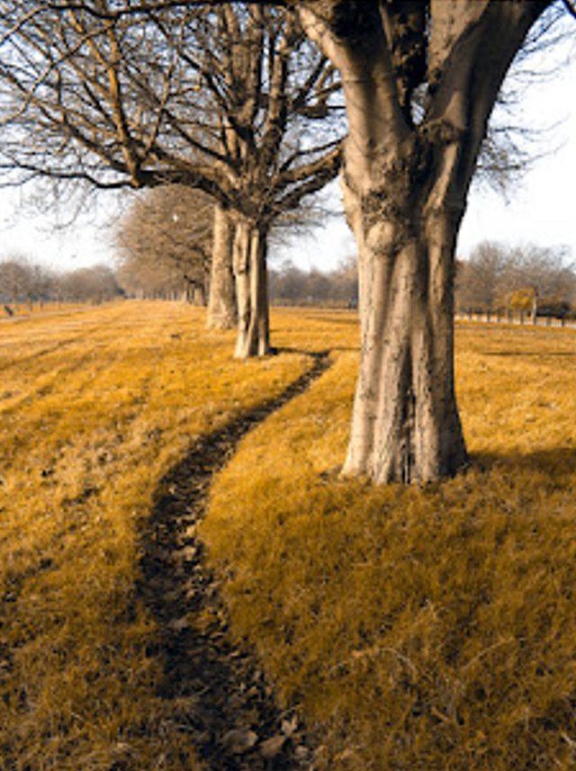

Tipos de Daltonismo

Deutaronopia
Dificuldade em perceber cores verdes devido à ausência de cones sensíveis ao verde. Isso faz com que vermelho e verde pareçam semelhantes.
Protanopia
Deficiência na percepção de cores vermelhas devido à ausência de cones sensíveis ao vermelho. Resulta em dificuldade em distinguir entre vermelho e verde.

Tritanopia
Falta de cones sensíveis ao azul, afetando a percepção das cores azuis e amarelas. As cores podem parecer mais semelhantes e menos vibrantes.

Acromatopsia
Condição rara onde a pessoa não percebe cores e vê apenas em preto, branco e tons de cinza. Causa também sensibilidade extrema à luz e problemas com a visão em detalhes.